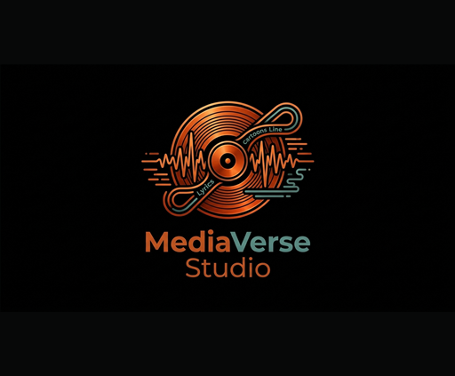

Your music library, with the words.
MediaVerse Studio is a free, non-commercial music library manager and player for Windows, with a companion app for Samsung smart TVs. It helps you rip your CDs carefully, put your library's tags in order, and then enjoy your music on any screen with the album art and the song's lyrics shown together as it plays.
In development · not yet releasedCareful CD ripping
Each disc is read to a lossless copy first and checked against AccurateRip, then turned into FLAC for your archive and MP3 for everyday listening.
Tags put right
Albums ripped long ago with missing or "Unknown" tags are recognised from their track lengths and sound, and the missing details are suggested for you to check before anything is written.
Lyrics, front and centre
Song lyrics are found and stored with your music, and synced lyrics follow along line by line while the song plays.
On the big screen
The Samsung TV app plays your library from your computer over the home network, from a Jellyfin server or from a USB drive, with a cover wall and a visualizer coloured by the album art.